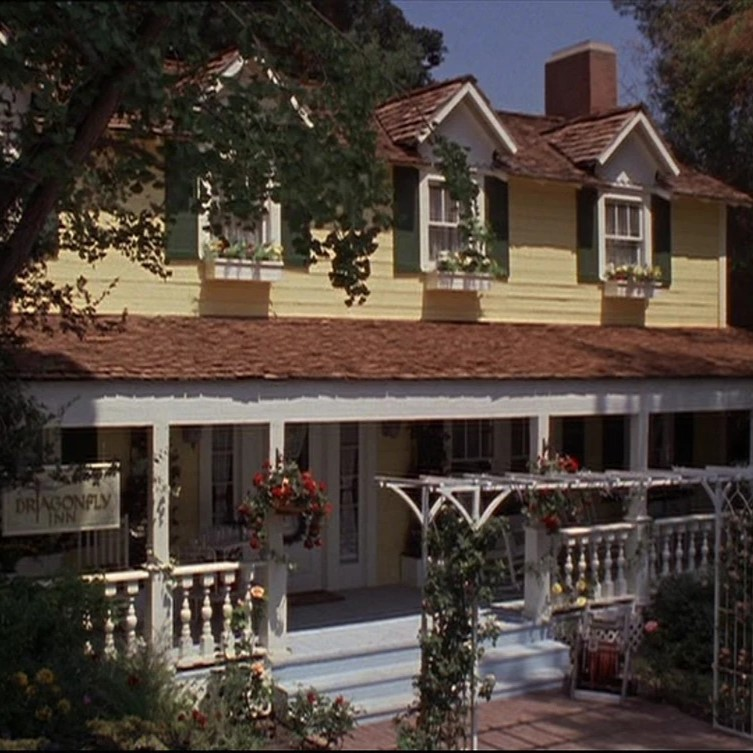

The inn was a pre-existing inn owned and run by the family of Fran Weston,
that had fallen into disrepair. Fran initially refuses to sell the place,
but not long after dies and with no inheriting family members, Lorelai and Sookie
negotiate a deal at Fran's funeral with the family attorney.
TYPE: Hotel
PROPRIETOR: Lorelai Gilmore & Sookie St. James
Est: 2004 (refurbished; new ownership) & 1893(originally)
History: Previously owned by Fran Weston of the Stars Hollow Westons, who lived in the town for more than 100 years.
MANAGER(S): Lorelai Gilmore
STAFF: Sookie St. James, Michel Gerard, & Luke Danes (prev. temp. chef)
AMENITIES: Breakfast, Brunch, Lunch, Dinner, Events, Garden, Porch, & Horseback riding
LOCATION: 214 Third Street, Stars Hollow, Connecticut